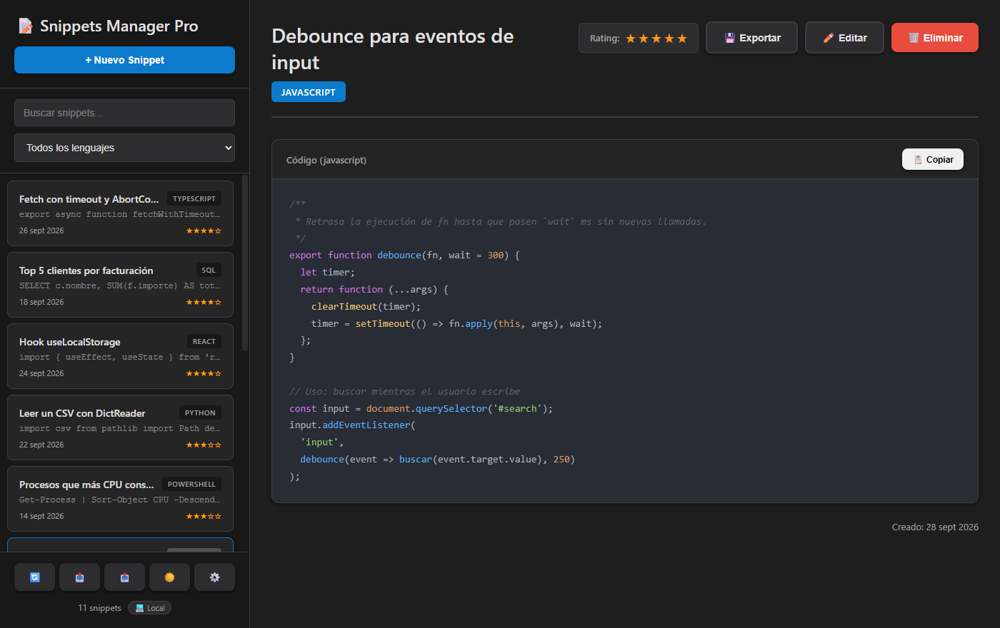

En tu equipo, sin conexión
Por defecto los snippets se guardan en un archivo JSON local. No necesitas cuenta ni red, y nadie más tiene acceso a ellos.
Código abierto · MIT · v2.1.0
Guarda ese fragmento que siempre acabas buscando: con resaltado de sintaxis, búsqueda instantánea, filtro por lenguaje y rating. En tu equipo y sin conexión, o en tu propia API para compartirlos entre equipos.

Ctrl+N, una descripción, el lenguaje y el código. Si quieres, puntúalo de 1 a 5 estrellas.
Ctrl+F busca en la descripción y en el código; el desplegable filtra por lenguaje.
Cópialo al portapapeles con un clic o expórtalo como archivo con la extensión de su lenguaje.
Instaladores para Windows, macOS y Linux. Gratis, sin anuncios y con el código en GitHub.
Una biblioteca personal de fragmentos de código, pensada para encontrar y reutilizar lo que ya escribiste una vez.
Por defecto los snippets se guardan en un archivo JSON local. No necesitas cuenta ni red, y nadie más tiene acceso a ellos.
En Ajustes puedes conectar la app a un servidor compatible con
snippets-manager-backend
para usar los mismos snippets en varios equipos. Botón para probar la conexión antes de guardar.
Con highlight.js incluido en la app (funciona sin conexión) y su tema para el modo oscuro y el claro.
Búsqueda instantánea por descripción y por código, combinable con el filtro por lenguaje, que se rellena solo con los lenguajes que usas.
Puntúa cada snippet de 1 a 5 estrellas al crearlo o con un clic en sus estrellas.
Exporta toda la colección a JSON e impórtala en otro equipo o almacenamiento, o guarda un snippet suelto como archivo de código con su extensión y una cabecera con sus datos.
Crear, buscar, guardar, editar y cancelar sin tocar el ratón.
Si cancelas, cambias de snippet o cierras la ventana con un formulario a medias, la app te pregunta antes de descartarlo.
Con un clic; la app recuerda tu elección.
En macOS, ⌘ en lugar de Ctrl.
| Acción | Atajo |
|---|---|
| Nuevo snippet | Ctrl+N |
| Buscar | Ctrl+F |
| Guardar (en el formulario) | Ctrl+S |
| Editar el snippet abierto | Ctrl+E |
| Cancelar la edición · limpiar la búsqueda · cerrar Ajustes | Esc |
Todos con resaltado de sintaxis salvo Regex y «Otro», que se muestran como texto plano.
Capturas reales de la aplicación con una colección de ejemplo guardada en local. Haz clic para ampliar.
Última versión: v2.1.0
Instalador .exe · 64 bits
~96 MB
Imagen .dmg · Apple Silicon
Última versión en GitHub
Ejecutable .AppImage
Última versión en GitHub
¿Prefieres ver todos los archivos? Todas las versiones en GitHub.
SmartScreen puede avisar de que el editor es desconocido porque el instalador no está firmado. Pulsa Más información → Ejecutar de todas formas.
Si Gatekeeper bloquea la app, ábrela con clic derecho → Abrir, o ejecuta
xattr -cr "/Applications/Snippets Manager Pro.app".
Dale permisos de ejecución al AppImage:
chmod +x Snippets-Manager-Pro-*.AppImage y lánzalo con doble clic.
git clone https://github.com/cmurestudillos/snippets-manager.git
cd snippets-manager
pnpm install
pnpm start # ejecutar en desarrollo
pnpm package:win # generar instalador de Windows
pnpm package:mac # generar imagen de macOS
pnpm package:linux # generar AppImage
Requisitos: Node.js 22.12+ y pnpm 11+. Los instaladores se generan en release/.
Pulsa + Nuevo Snippet (Ctrl+N), escribe una descripción, elige el lenguaje o framework, pega el código y, si quieres, márcale estrellas. Guardar (Ctrl+S) lo añade a la lista.
Haz clic en un snippet de la lista para verlo con resaltado de sintaxis. Copiar lo deja en el portapapeles y las estrellas de la cabecera cambian su rating al momento.
Editar (Ctrl+E) abre el formulario con sus datos; Cancelar o Esc vuelve sin guardar (si has cambiado algo, la app pregunta antes). Eliminar pide confirmación.
El buscador (Ctrl+F) filtra por descripción y por código mientras escribes; Esc lo vacía. El desplegable deja solo los snippets de un lenguaje. El contador del pie indica cuántos se están mostrando.
El botón ⚙️ de la barra lateral abre Ajustes, y la etiqueta junto al contador indica el almacenamiento activo (💻 Local o ☁️ API).
Un archivo snippets.json en la carpeta de datos de la app. En Windows es
%APPDATA%\snippets-manager\snippets.json; en macOS,
~/Library/Application Support/snippets-manager/, y en Linux,
~/.config/snippets-manager/. Ajustes → Mostrar archivo lo abre en el explorador. Si
el archivo se daña, la app avisa y no lo sobrescribe.
Indica la URL base de una API compatible con
snippets-manager-backend
(Express + MongoDB), por ejemplo https://mi-servidor.com/api/snippets, y pulsa
Probar conexión. La API tiene que responder a:
| Petición | Uso |
|---|---|
GET / → { "snippets": [...] } |
Listar |
POST / · PUT /:id → { "snippet": {...} } |
Crear · editar |
PATCH /:id/rating · DELETE /:id |
Rating · eliminar |
POST /importar (opcional) |
Importar en una sola petición; si no existe, se crean uno a uno |
El backend de referencia no tiene autenticación: si lo despliegas en Internet, cualquiera que conozca la URL puede leer y modificar los snippets.
Cambiar de almacenamiento no mueve los snippets: expórtalos (📤) con el almacenamiento antiguo e impórtalos (📥) con el nuevo.
📤 guarda todos los snippets en un archivo JSON. 📥 lee un archivo con una lista de objetos como este y, tras confirmar, los añade a los actuales (no borra nada). Se descartan, avisando, los elementos sin descripción, lenguaje o código; el rating se ajusta a 0-5 y, en local, se conserva la fecha.
[
{
"description": "Centrar con CSS Grid",
"language": "css",
"code": ".contenedor { display: grid; place-items: center; }",
"rating": 5,
"fecha": "2026-09-20T09:30:00.000Z"
}
]
Exportar en la vista de un snippet lo guarda como archivo de código con la extensión de
su lenguaje (.js, .py, .cs, .ps1, .yml…)
y una cabecera comentada con descripción, lenguaje, rating y fecha. Los JSON se exportan sin cabecera (no
admiten comentarios) y el shebang o la declaración <?xml?> se mantienen en la primera
línea.
src/
├── main.js # proceso principal: ventana, diálogos e IPC
├── preload.js # puente IPC seguro (contextIsolation activo)
├── renderer.js # interfaz: lista, vistas, filtros, atajos y Ajustes
├── index.html # estructura de la ventana (CSP estricta)
├── settings.js # ajustes en userData/settings.json
└── storage/
├── local-store.js # snippets en userData/snippets.json
├── api-store.js # cliente de la API REST (axios)
└── validate.js # validación compartidaConstruida con Electron, highlight.js y axios. Sin frameworks de UI ni bundler: HTML, CSS y JavaScript.
Los issues y pull requests son bienvenidos. Abre un issue describiendo el bug (con los pasos para reproducirlo) o la funcionalidad que echas de menos.